മുഖവുര: കുട്ടിക്കളിയല്ല സോഷ്യൽ മീഡിയ
ഭൗതിക പുരോഗതിയുടെ വിഷയത്തിൽ വലിയ നേട്ടങ്ങൾ കൈവരിച്ചുകൊണ്ടിരിക്കുകയാണ് നമ്മുടെ സംസ്ഥാനം. എന്നാൽ ബൗദ്ധികമായ പുതുതലമുറയുടെ ഇടപെടലുകൾ വലിയ രീതിയിൽ കുറഞ്ഞുകൊണ്ടിരിക്കുകയും, ദിനംപ്രതി ആശങ്കകൾ ഏറെ ഉണ്ടാക്കുന്ന വാർത്തകൾ ധാരാളമായി നാം കണ്ടുകൊണ്ടിരിക്കുകയാണ്. കുട്ടികളിൽ ഇന്ന് നാം കണ്ടുകൊണ്ടിരിക്കുന്ന ഭൂരിപക്ഷം പ്രശ്നങ്ങളുടെയും മൂല കാരണം അനിയന്ത്രിതമായ മൊബൈൽ ഫോൺ ഉപയോഗമാണ്. ആശയവിനിമയത്തിനുള്ള ഒരു ഉപകരണം എന്നതിലുപരി, കുട്ടികളുടെ വികാരങ്ങളെയും വ്യക്തിത്വത്തെയും മൂല്യബോധത്തെയും രൂപപ്പെടുത്തുന്ന ഒരു അദൃശ്യ ശക്തിയായി മൊബൈൽ ഫോൺ, കൃത്യമായി പറഞ്ഞാൽ സോഷ്യൽ മീഡിയ മാറിയിരിക്കുന്നു.
വീടുകളും സ്കൂളുകളും മുതൽ പൊതു ഇടങ്ങളിൽ വരെ വധിച്ചുകൊണ്ടിരിക്കുന്ന ലഹരി ഉപയോഗവും, പ്രണയ കെണികളും, ലൈംഗിക ചൂഷണങ്ങളും, ലഹരി വ്യാപനവും, അശ്ലീല കാഴ്ചകളുടെ സാമാന്യവൽക്കരണവും, അക്രമാസക്തമായ കണ്ടൻറുകളുടെ സ്വാധീനവും ഇങ്ങനെ ഒട്ടനവധി പ്രശ്നങ്ങൾക്ക് ഇത്തരം പ്ലാറ്റ്ഫോമുകൾ കാരണമാവുന്നുണ്ട്. സൈബർ ഇടങ്ങളിലെ അൽഗോരിതങ്ങൾ ലാഭേച്ഛയോടെ കുട്ടികളുടെ ശ്രദ്ധയെ പിടിച്ചുനിർത്തുമ്പോൾ, അവരിലെ ബൗദ്ധിക വികാസം മന്ദഗതിയിലാകുകയും മാനസിക സമ്മർദ്ദങ്ങൾ വർധിക്കുകയും ചെയ്യുന്നു. ഈ അമിത ഉപയോഗം കുട്ടികളുടെ തലച്ചോറിലെ 'ഗ്രേ മാറ്റർ' വോളിയം കുറയ്ക്കുകയും ഹിപ്പോക്യാമ്പസ് ചുരുങ്ങുന്നതിലേക്ക് നയിക്കുകയും ചെയ്യുന്നുവെന്ന ശാസ്ത്രീയ പഠനങ്ങൾ, വരാനിരിക്കുന്ന തലമുറയുടെ ആരോഗ്യകരമായ നിലനിൽപ്പിനെക്കുറിച്ചുള്ള വലിയൊരു അപായ സൂചനയാണ്.
ഈ അടിയന്തര സാഹചര്യത്തിൽ, ഒരു സമൂഹം എന്ന നിലയിൽ നമുക്ക് നിശബ്ദരായിരിക്കാൻ കഴിയില്ല. 16 വയസ്സിൽ താഴെയുള്ള കുട്ടികളുടെ സോഷ്യൽ മീഡിയ പ്ലാറ്റ്ഫോമുകളുടെ ഉപയോഗം കർശനമായി നിയന്ത്രിക്കുകയും കൃത്യമായി രൂപത്തിലുള്ള നിയമം നിർമാണങ്ങൾ സൈബർ സുരക്ഷയുമായി ബന്ധപ്പെട്ട് നടത്തണമെന്നും ആവശ്യപ്പെട്ടുകൊണ്ടാണ് വിസ്ഡം സ്റ്റുഡൻസ് ‘കുട്ടിക്കളിയല്ല സോഷ്യൽ മീഡിയ’ എന്ന ക്യാമ്പയിൻ ആരംഭിച്ചിരിക്കുന്നത്.
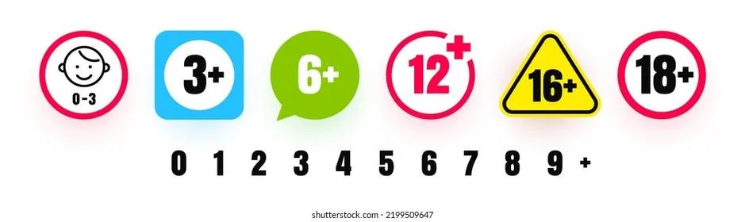
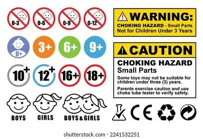
- ഏതൊരു കളിപ്പാട്ടങ്ങൾക്കും കൃത്യമായ പ്രായ പരിധികളും നിർദ്ദേശങ്ങളും ഉണ്ടാവാറുണ്ട്
കുട്ടികൾക്ക് ഓരോ പ്രായത്തിലും ലഭിക്കേണ്ട വിവരങ്ങളും അവർക്ക് ഉപയോഗിക്കാൻ സാധിക്കുന്ന അളവുകളും പരിഗണിച്ചുകൊണ്ടാണ് ഇത്തരം പ്രായപരിധികൾ നിശ്ചയിക്കാറുള്ളത്.
എന്നാൽ മൊബൈൽ ഫോൺ എന്ന ഏറ്റവും പവർഫുൾ ആയ ഗാഡ്ജറ്റ് കുട്ടികളുടെ കയ്യിലേക്ക് ഇന്ന് എത്തുന്നത് വളരെ ചെറിയ പ്രായത്തിലാണ്.
- പലപ്പോഴും കുട്ടികൾക്ക് മൊബൈൽ ഫോൺ കൊടുക്കാനുള്ള ന്യായീകരണങ്ങൾ:
ഭക്ഷണം കഴിപ്പിക്കാൻ.
കരച്ചിൽ/വാശി നിർത്താൻ.
മാതാപിതാക്കളുടെ തിരക്കുകൾ കാരണം കൊണ്ട്.
- കൂടെയുള്ള കുട്ടികൾക്ക് എല്ലാം മൊബൈൽ ഉണ്ട് എന്നത്
വിനോദത്തിനുള്ള എളുപ്പവഴിയായി. Etc.
ഏതൊരു കോണ്ടന്റിലേക്കും ഒരു നിയന്ത്രണവും ഇല്ലാതെ എത്തിച്ചേരാൻ സാധിക്കുന്ന ഇത്രയും അപകടമുള്ള മൊബൈൽ ഫോൺ എന്ന ഗാഡ്ജറ്റ് കുട്ടികളുടെ കയ്യിൽ എത്തുന്ന കാരണങ്ങളും ന്യായീകരണങ്ങളും ആണ് ഇവയെല്ലാം.
തീർച്ചയായും ടെക്നോളജി ഇത്രയും പുരോഗതി കൈവരിക്കുന്ന കാലത്ത് നമ്മുടെ കുട്ടികൾക്ക് കൃത്യമായ രൂപത്തിൽ ഡിജിറ്റൽ എജുക്കേഷൻ നൽകേണ്ടതുണ്ട്:
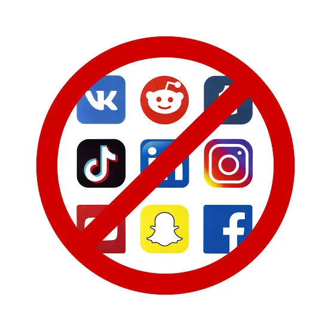
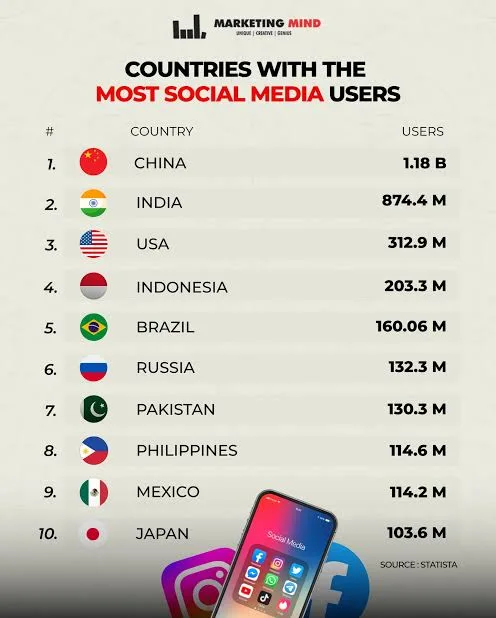
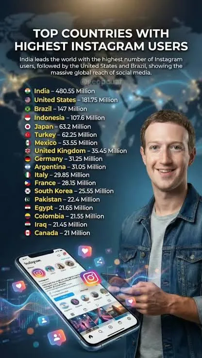
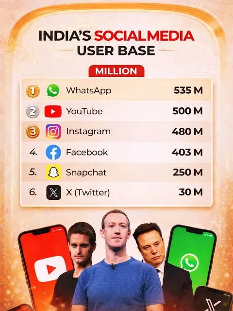
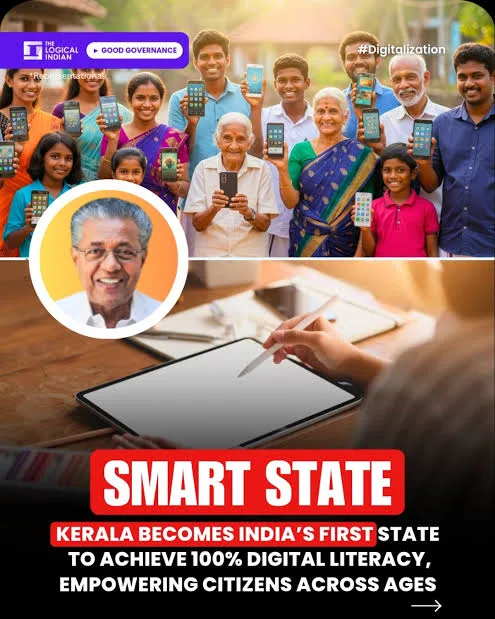
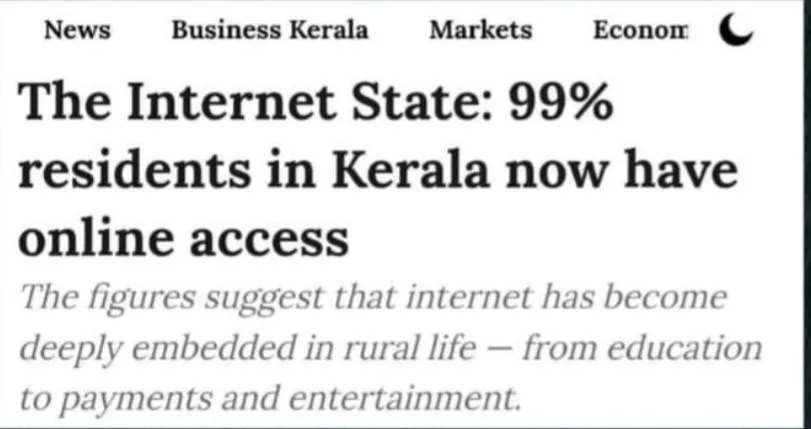
- അതുകൊണ്ടുതന്നെ നമ്മുടെ പോരാട്ടം മൊബൈൽ ഫോണിനോട് അല്ല
- നിയന്ത്രണങ്ങൾ ഇല്ലാത്ത സോഷ്യൽ മീഡിയ പ്ലാറ്റ്ഫോമുകളോട് ആണ്
ലോകത്തിലെ തന്നെ ഏറ്റവും വലിയ ഇൻറർനെറ്റ് ഹബ്ബ് ആയിട്ടുള്ള ഇന്ത്യയിൽ സോഷ്യൽ മീഡിയ യൂസേജിൽ ഏറ്റവും മുൻപന്തിയിൽ നിൽക്കുന്ന സംസ്ഥാനമാണ് കേരളം.
എന്നാൽ നിലവിൽ സോഷ്യൽ മീഡിയ പ്ലാറ്റ്ഫോമുകൾ മുന്നോട്ടു വച്ചിട്ടുള്ള പ്രായ പരിധി നയംമൂലം നമുക്ക് കൃത്യമായി കുട്ടികൾ എത്രത്തോളം ഇത്തരം പ്ലാറ്റ്ഫോമുകൾ ആക്സസ് ചെയ്യുന്നുണ്ട് എന്ന് ഡാറ്റ അവൈലബിൾ അല്ല. കൃത്യമായ സുരക്ഷ മാർഗ്ഗങ്ങൾ ഇല്ലാതെ പ്രായപരിധി നയം മാത്രം മുന്നോട്ടു വയ്ക്കുന്നത് തീർത്തും നിർഗുണമാണ്.
ഈ അവസരത്തിലാണ് വിസ്ഡം സ്റ്റുഡൻസ് 5000ത്തിലധികം ആളുകളുടെ സോഷ്യൽ മീഡിയ ഉപയോഗത്തിലെ ഡാറ്റ അവരിൽ നിന്നു തന്നെ വ്യക്തിഗതമായി സർവേയിലൂടെ പഠനം നടത്തിയത്. ഞെട്ടിക്കുന്ന വിവരങ്ങളാണ് സർവേയിലൂടെ വിസ്ഡം സ്റ്റുഡൻസ് കണ്ടെത്തിയത്.
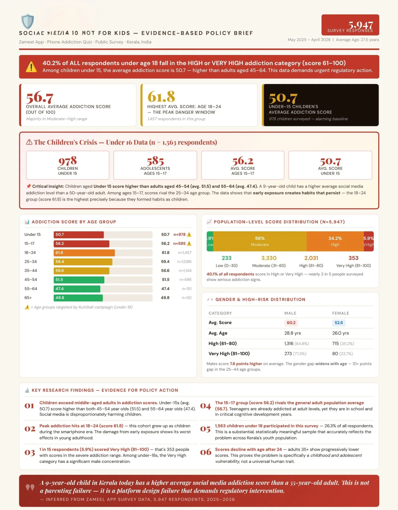
പ്രായഭേദമന്യേ മൊബൈൽ അഡിക്ഷൻ കാണിക്കുന്നുണ്ടെങ്കിലും, കുട്ടികളിൽ അത് ശരാശരിയെക്കാൾ അധികമാണ് എന്നത് വലിയ അപായ സൂചനയാണ്.
ഡിജിറ്റൽ വിദ്യാഭ്യാസകാലത്ത് ടെക്നോളജി നിയന്ത്രണങ്ങളോ?
ഡിജിറ്റൽ സാക്ഷരതയും സാങ്കേതികവിദ്യാ പഠനവും ഇന്നത്തെ തലമുറയുടെ അനിവാര്യതയാണ്. കുട്ടികളിലെ ബൗദ്ധികവും സർഗ്ഗാത്മകവുമായ ഉന്നമനത്തിനായി ശാസ്ത്രീയമായ കരിക്കുലങ്ങളും ഡിജിറ്റൽ വിദ്യാഭ്യാസ പദ്ധതികളും തീർച്ചയായും നടപ്പിലാക്കണം. എന്നാൽ, ഇത്തരം ക്രിയാത്മകമായ പഠനരീതികളല്ല നിലവിൽ സോഷ്യൽ മീഡിയ ആപ്പുകൾ കുട്ടികൾക്ക് നൽകുന്നത്. ലാഭത്തിനുവേണ്ടി അൽഗോരിതങ്ങൾ ഉപയോഗിച്ച് കുട്ടികളുടെ ശ്രദ്ധയെ തടവിലാക്കുന്നതും, വിനാശകരമായ ഉള്ളടക്കങ്ങളിലേക്ക് അവരെ വഴിതിരിച്ചുവിടുന്നതുമായ ആധുനിക സാമൂഹിക മാധ്യമങ്ങളുടെ പ്രവർത്തനരീതി, വിദ്യാഭ്യാസപരമായ ഡിജിറ്റൽ വളർച്ചയല്ല, മറിച്ച് ഡിജിറ്റൽ അഡിക്ഷനാണ് സൃഷ്ടിച്ചുകൊണ്ടിരിക്കുന്നത്.
ചില കണക്കുകൾ
അമിത ഉപയോഗം: സർവ്വേയിൽ പങ്കെടുത്തവരിൽ 34.2% പേർ ഉയർന്ന തോതിലും (High Addiction), 5.9% പേർ വളരെ ഉയർന്ന തോതിലും (Very High Addiction) സോഷ്യൽ മീഡിയ അടിമത്തം അനുഭവിക്കുന്നവരാണ്.
ഉപയോഗ രീതി: പഠനാവശ്യങ്ങൾക്കും ക്രിയാത്മകമായ പ്രവർത്തനങ്ങൾക്കും അപ്പുറം, സോഷ്യൽ മീഡിയ ആപ്പുകളിൽ ചെലവഴിക്കുന്ന സമയം കുട്ടികളിലെ ശ്രദ്ധാകേന്ദ്രീകരണം കുറയ്ക്കുകയും പഠനനിലവാരത്തെ പ്രതികൂലമായി ബാധിക്കുകയും ചെയ്യുന്നു.
അതുകൊണ്ട്, സാങ്കേതികവിദ്യയുടെ ഗുണങ്ങൾ കുട്ടികളിലേക്ക് എത്തിക്കുമ്പോൾ തന്നെ, അനിയന്ത്രിതമായ സോഷ്യൽ മീഡിയ ഉപയോഗം അവരുടെ ഭാവിക്ക് ഭീഷണിയാണെന്ന് നാം തിരിച്ചറിയേണ്ടതുണ്ട്. അച്ചടക്കമുള്ള ഡിജിറ്റൽ ജീവിതശൈലിയിലൂടെ മാത്രമേ കുട്ടികളെ സുരക്ഷിതരാക്കാൻ കഴിയൂ.
ആഗോള മാതൃകകൾ അടിയന്തരമായി സ്വീകരിക്കണം
കുട്ടികളുടെ സുരക്ഷയ്ക്കായി സോഷ്യൽ മീഡിയ നിയന്ത്രണങ്ങൾ ഒരു ആഗോള തരംഗമായി മാറിക്കൊണ്ടിരിക്കുകയാണ്. ഓസ്ട്രേലിയ ലോകത്തിന് മാതൃകയായി 16 വയസ്സിൽ താഴെയുള്ളവർക്ക് സോഷ്യൽ മീഡിയ നിരോധനം നടപ്പിലാക്കിയപ്പോൾ, മലേഷ്യ, ഡെൻമാർക്ക്, നോർവേ, ഗ്രീസ്, ബ്രസീൽ തുടങ്ങിയ രാജ്യങ്ങളും സമാനമായ കർശന നിയമങ്ങളിലേക്കും നിയന്ത്രണങ്ങളിലേക്കും നീങ്ങുകയാണ്. പല യൂറോപ്യൻ രാജ്യങ്ങളും പ്രായപരിധി വർദ്ധിപ്പിക്കാനും മാതാപിതാക്കളുടെ സമ്മതത്തോടെ മാത്രം അനുമതി നൽകാനുമുള്ള നയങ്ങൾ രൂപീകരിക്കുന്നു. ഇന്ത്യയിലും ഈ ചർച്ചകൾ സജീവമാണ്; കർണാടകയും ആന്ധ്രാപ്രദേശും കുട്ടികൾക്കായുള്ള സോഷ്യൽ മീഡിയ നിയന്ത്രണങ്ങൾ പ്രഖ്യാപിച്ചു കഴിഞ്ഞു. മദ്രാസ് ഹൈക്കോടതി ഉൾപ്പെടെയുള്ളവർ ഓസ്ട്രേലിയൻ മാതൃകയിൽ രാജ്യവ്യാപകമായ നിയമനിർമ്മാണം വേണമെന്ന് കേന്ദ്ര സർക്കാരിനോട് ശുപാർശ ചെയ്തിട്ടുണ്ട്.
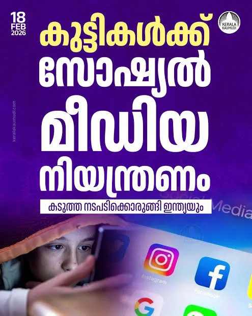
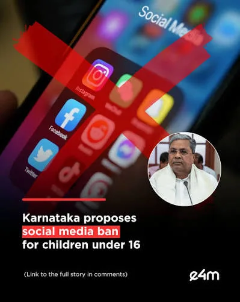
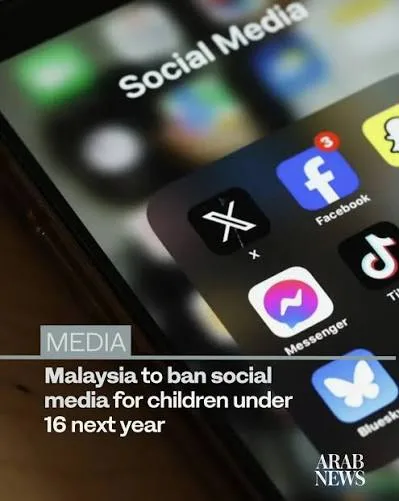
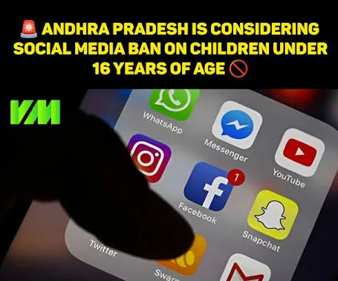
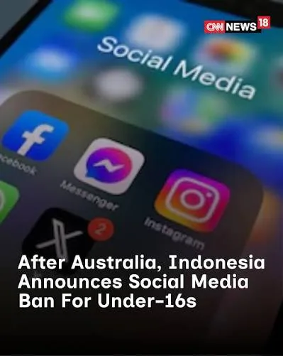
കേരളം പോലൊരു പ്രബുദ്ധവും സാക്ഷരതയിൽ മുന്നിൽ നിൽക്കുന്നതുമായ സംസ്ഥാനത്തിന് ഈ വിഷയത്തിൽ ഇനിയും നിശബ്ദരായിരിക്കാൻ കഴിയില്ല. കേരള സംസ്ഥാന ബാലാവകാശ കമ്മീഷൻ ഇതിനകം തന്നെ 18 വയസ്സുവരെയുള്ള കുട്ടികളുടെ സ്ക്രീൻ ഉപയോഗം നിയന്ത്രിക്കാൻ നിയമനിർമ്മാണം നടത്തണമെന്ന് നിർദ്ദേശിച്ചിട്ടുണ്ട്. കേരള പോലീസ് നടപ്പിലാക്കുന്ന 'ഡി-ഡാഡ്' (D-DAD) പോലുള്ള ഡിജിറ്റൽ ഡി-അഡിക്ഷൻ പദ്ധതികൾ സ്വാഗതാർഹമാണെങ്കിലും, ഇതൊരു താൽക്കാലിക പരിഹാരം മാത്രമാണ്. സാങ്കേതികവിദ്യയുടെ വളർച്ചയെ നിഷേധിക്കാനല്ല, മറിച്ച് നമ്മുടെ കുട്ടികളുടെ ഭാവിയെ ഹനിക്കുന്ന അൽഗോരിതങ്ങളെ നിയന്ത്രിക്കാൻ കേരള സർക്കാർ അടിയന്തരമായി ഇടപെടേണ്ടതുണ്ട്. ഒരു സമഗ്ര നിയമനിർമ്മാണത്തിലൂടെയും ബോധവൽക്കരണത്തിലൂടെയും മാത്രമേ സൈബർ ഇടങ്ങളിലെ ഈ അപകടങ്ങളിൽ നിന്ന് നമ്മുടെ കുട്ടികളെ സംരക്ഷിക്കാൻ സാധിക്കുകയുള്ളൂ.
ആഗോളതലത്തിൽ തന്നെ ഈ വിഷയത്തിൽ ശക്തമായ നിയമനിർമ്മാണങ്ങൾക്ക് രാജ്യങ്ങൾ തുടക്കം കുറിച്ചിരിക്കുകയാണ്.
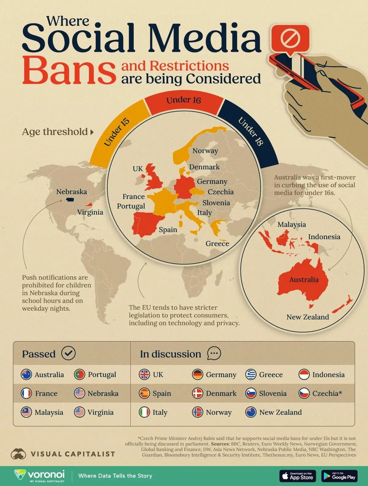
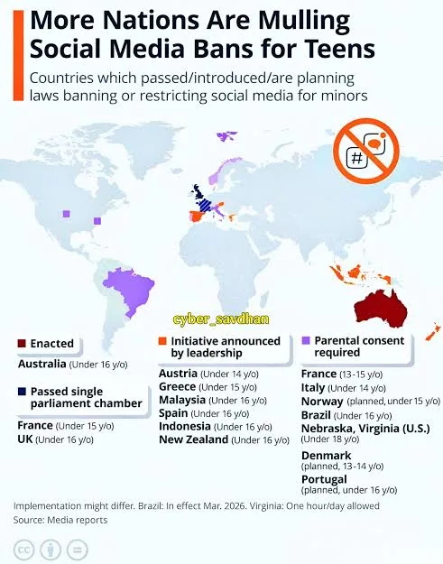
സ്റ്റാറ്റിസ്റ്റാ നടത്തിയ പഠനത്തിൽ ഈ വിഷയത്തെ അനുകൂലിച്ചു കൊണ്ടാണ് ഭൂരിപക്ഷം ആളുകളും പ്രതികരിച്ചിട്ടുള്ളത്.
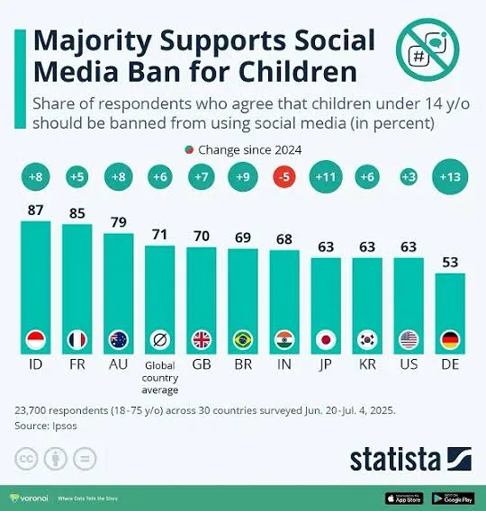
ഈ നിയമങ്ങൾ നടപ്പിലാക്കാൻ ആഗോളതലത്തിൽ പ്ലാറ്റ്ഫോമുകൾ ഉപയോഗിക്കുന്ന പ്രധാന സാങ്കേതിക സംവിധാനങ്ങൾ ഇവയാണ്:
AI-അധിഷ്ഠിത പ്രായനിർണ്ണയം (AI-based Age Estimation): ഉപയോക്താവിന്റെ മുഖത്തെ സവിശേഷതകൾ വിശകലനം ചെയ്ത് അവരുടെ ഏകദേശ പ്രായം കണ്ടെത്താനുള്ള സാങ്കേതികവിദ്യ.
ബയോമെട്രിക് വെരിഫിക്കേഷൻ (Biometric Verification): മുഖം തിരിച്ചറിയുന്ന സംവിധാനങ്ങൾ (Facial recognition) ഉപയോഗിച്ച് ആധാർ അല്ലെങ്കിൽ മറ്റ് ഔദ്യോഗിക ഐഡികളുമായി ലിങ്ക് ചെയ്ത് പ്രായം ഉറപ്പുവരുത്തുക.
ഇൻഫിനിറ്റ് സ്ക്രോൾ നിരോധനം (Anti-Infinite Scroll): അമിതമായി സമയം ചെലവഴിക്കാൻ പ്രേരിപ്പിക്കുന്ന 'ഓട്ടോ-പ്ലേ' വീഡിയോകളും സ്ക്രോളിംഗ് ഫീച്ചറുകളും കുട്ടികൾക്കായി ഒഴിവാക്കൽ.
അൽഗോരിതമിക് നിയന്ത്രണം (Algorithmic Filtering): കുട്ടികൾക്ക് ഹാനികരമായ ഉള്ളടക്കം (Toxic content) നൽകുന്ന അൽഗോരിതങ്ങൾ തടയുകയും സുരക്ഷിതമായ ഫീഡുകൾ മാത്രം നൽകുകയും ചെയ്യുക.
ഷാഡോ ബാനിംഗ് (Shadow Banning): നിബന്ധനകൾ ലംഘിക്കുന്ന അക്കൗണ്ടുകളെ കണ്ടെത്താനും അവയുടെ പ്രവർത്തനം തടയാനും പ്ലാറ്റ്ഫോമുകൾക്ക് ഈ സാങ്കേതികവിദ്യ ഉപയോഗിക്കാം.
ഈ നിയമങ്ങളെല്ലാം തന്നെ പ്ലാറ്റ്ഫോമുകൾക്ക് വലിയ പിഴകൾ (ഉദാഹരണത്തിന് ഓസ്ട്രേലിയയിൽ 49.5 ദശലക്ഷം ഓസ്ട്രേലിയൻ ഡോളർ വരെ) ചുമത്തുന്ന തരത്തിലുള്ളവയാണ്. കേരളത്തിലും മറ്റ് ഇന്ത്യൻ സംസ്ഥാനങ്ങളിലും ഇത്തരം നിയമനിർമ്മാണങ്ങൾക്കുള്ള ചർച്ചകൾ സജീവമായ സാഹചര്യത്തിൽ, ലോകത്ത് വിജയിച്ച ഈ സാങ്കേതിക മാതൃകകൾ നമുക്ക് പിന്തുടരാവുന്നതാണ്.


- കുട്ടികളിലേക്ക് അശ്ലീല കാഴ്ചകൾ എത്തുന്ന അതിവേഗ പാതയായി സോഷ്യൽ മീഡിയ പ്ലാറ്റ്ഫോമുകൾ മാറി:
The Digital Degeneracy:
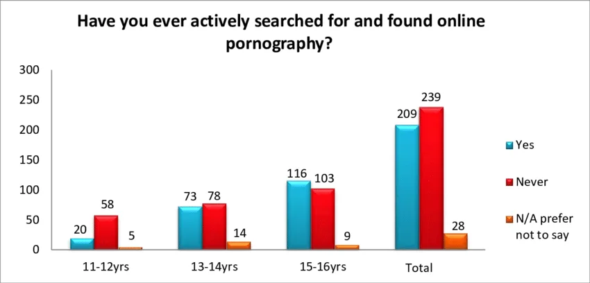
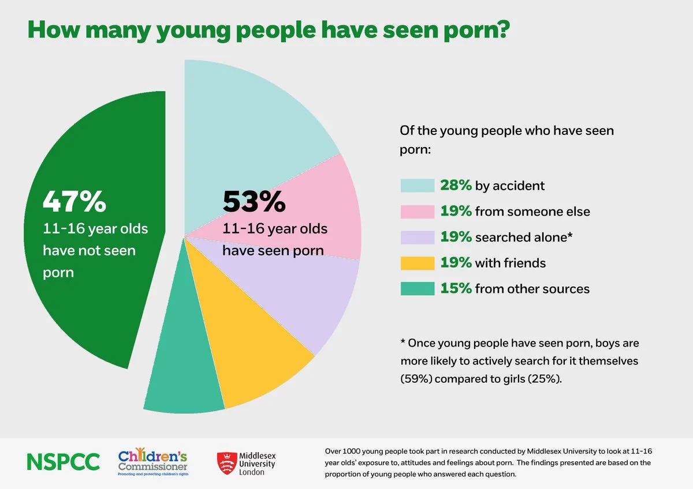
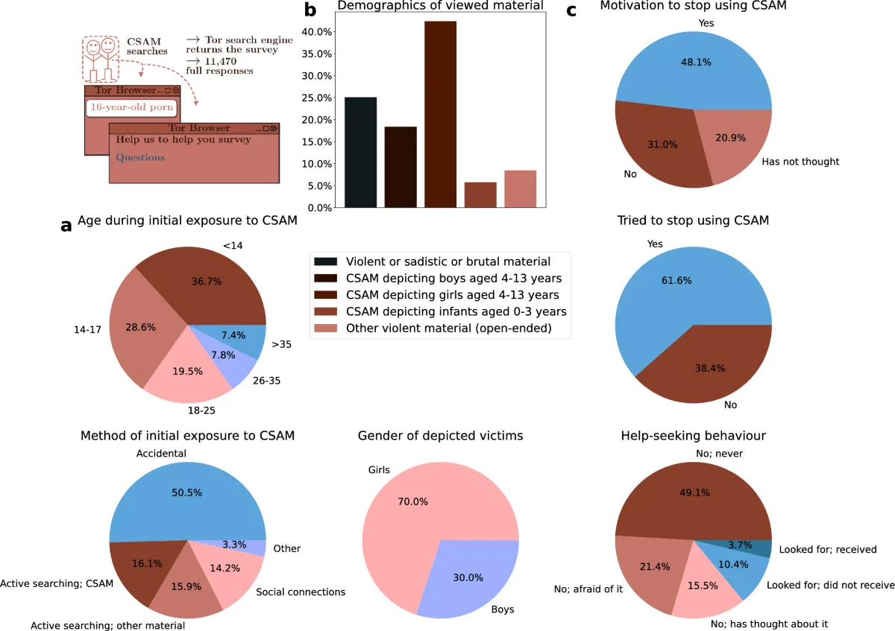
ഇന്ന് കേരളത്തിൽ ധാരാളമായി കുട്ടികൾ ഉപയോഗിക്കുന്ന ഇൻസ്റ്റഗ്രാം എന്ന ഒറ്റ പ്ലാറ്റ്ഫോമിലൂടെ കൈമാറപ്പെടുന്ന അപകടകരമായ കണ്ടൻ്റുകൾക്ക് യാതൊരു നിയന്ത്രണങ്ങളും ഇല്ല.
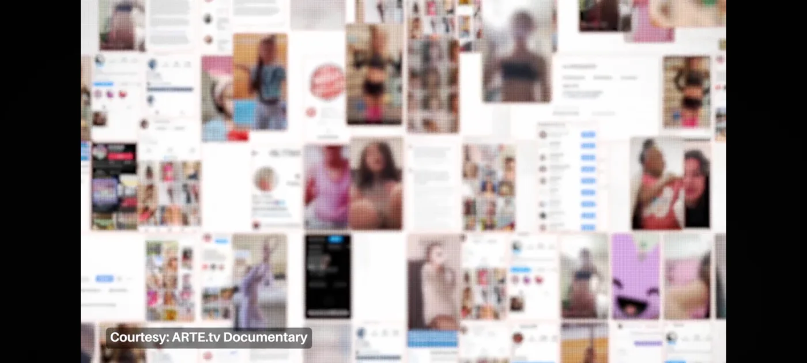
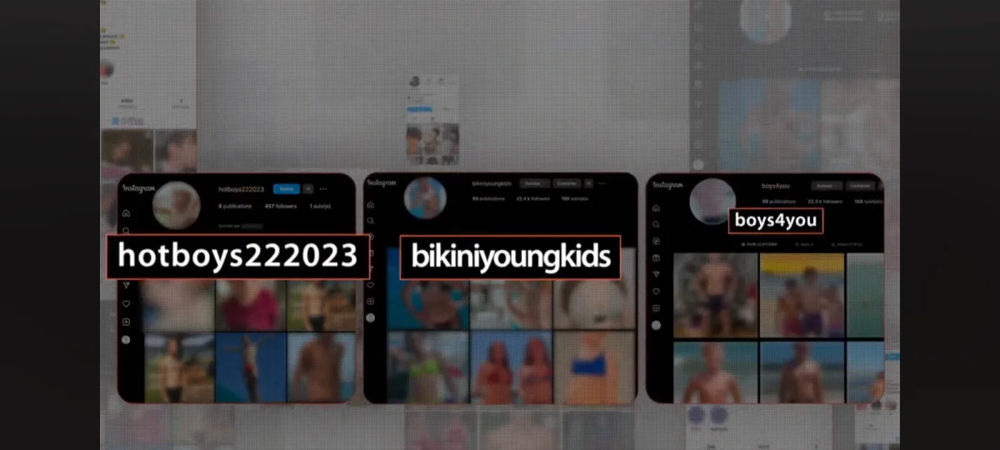
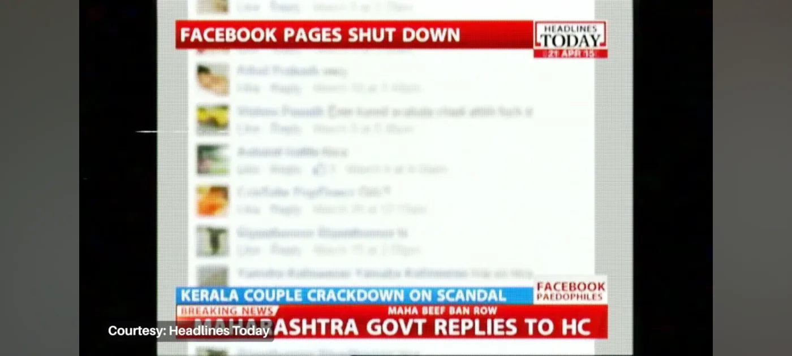
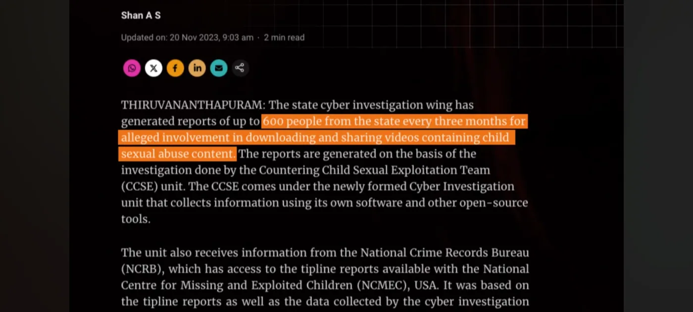
ഇന്നത്തെ സോഷ്യൽ മീഡിയ പ്ലാറ്റ്ഫോമുകൾ, പ്രത്യേകിച്ച് ഇൻസ്റ്റാഗ്രാം പോലുള്ളവ, അൽഗോരിതങ്ങളുടെ സഹായത്തോടെ കുട്ടികളിലേക്ക് നഗ്നതയും ലൈംഗിക ചുവയുള്ള ഉള്ളടക്കങ്ങളും വൻതോതിൽ എത്തിക്കുന്നുണ്ട്. ഇത്തരം പ്ലാറ്റ്ഫോമുകളിൽ, എളുപ്പത്തിൽ ലഭ്യമാകുന്ന അശ്ലീല ലിങ്കുകളും വീഡിയോകളും കുട്ടികളുടെ മാനസിക നിലവാരത്തെയും വളർച്ചയെയും വല്ലാതെ ബാധിക്കുന്നു. "പെൺകുട്ടികളെ വസ്തുവൽക്കരിക്കരുത്" എന്ന് പ്രസംഗിക്കുന്ന ഇൻഫ്ലുവൻസർമാർ തന്നെ അവരുടെ റീലുകളിലൂടെ അശ്ലീലത പ്രചരിപ്പിക്കുന്നത് വിരോധാഭാസമാണ്. ഈ ഉള്ളടക്കങ്ങൾ കുട്ടികളിൽ ലൈംഗികമായ അമിത ജിജ്ഞാസയും തെറ്റായ ധാരണകളും വളർത്തുകയും, അവരെ ചൂഷണങ്ങൾക്ക് ഇരയാക്കുകയും ചെയ്യുന്നു.
എന്തുകൊണ്ട് ഇത് തടയണം?
അൽഗോരിതമിക് ട്രാപ്പ്: കുട്ടികളുടെ താല്പര്യങ്ങൾക്കനുസരിച്ച് അശ്ലീല സ്വഭാവമുള്ള ഉള്ളടക്കങ്ങൾ ഫീഡുകളിലേക്ക് താനേ എത്തിച്ചേരുന്നു.
മാനസികമായ സ്വാധീനം: വളരുന്ന പ്രായത്തിൽ ഇത്തരം ഉള്ളടക്കങ്ങൾ കാണുന്നത് കുട്ടികളുടെ തലച്ചോറിലെ ഡോപാമിൻ സിസ്റ്റത്തെ തകരാറിലാക്കുകയും, യഥാർത്ഥ ജീവിതത്തിലെ ബന്ധങ്ങളെക്കുറിച്ചുള്ള കാഴ്ചപ്പാടുകൾ വികലമാക്കുകയും ചെയ്യുന്നു.
ദുരുപയോഗം: ഇത്തരം ഉള്ളടക്കങ്ങൾക്കടിമപ്പെട്ട കുട്ടികൾ എളുപ്പത്തിൽ സൈബർ തട്ടിപ്പുകാർക്കും ലൈംഗിക ചൂഷകർക്കും ഇരയാകുന്നു.
സാമൂഹിക വിപത്ത്: വൾഗർ ഡാൻസുകളും അശ്ലീല പരാമർശങ്ങളും 'ട്രെൻഡ്' ആയി മാറുന്നത് കുട്ടികളിൽ സഭ്യമല്ലാത്ത പെരുമാറ്റരീതികൾ സ്വാഭാവികമാക്കുന്നു.
Precocious Sexualization: കൗമാരപ്രായത്തിന് മുൻപേ കുട്ടികളിൽ ലൈംഗികമായ ജിജ്ഞാസയും പെരുമാറ്റരീതികളും രൂപപ്പെടുത്തുന്ന 'അകാല ലൈംഗികവൽക്കരണത്തിന്' കാരണമാകുന്നു.
The Drug Trap:
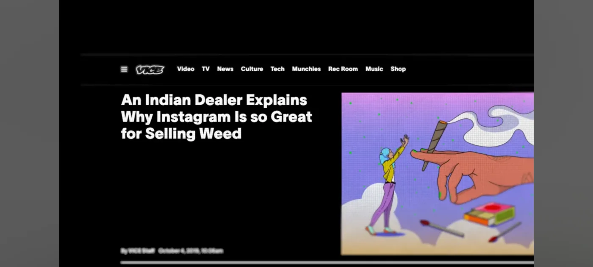
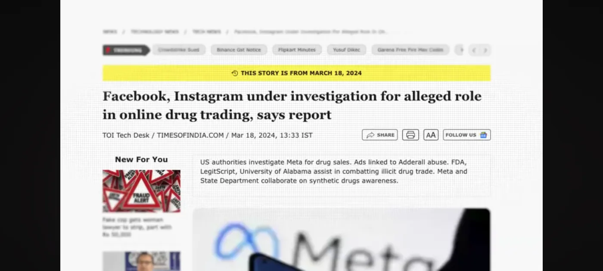
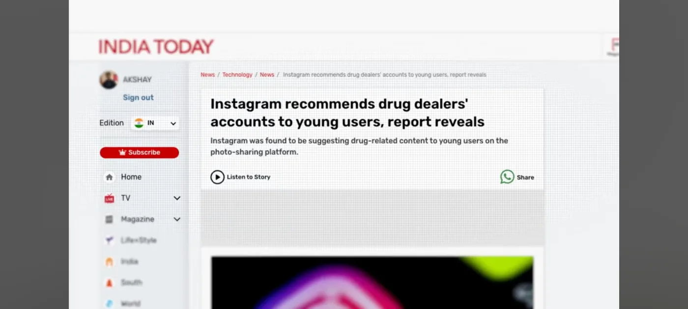
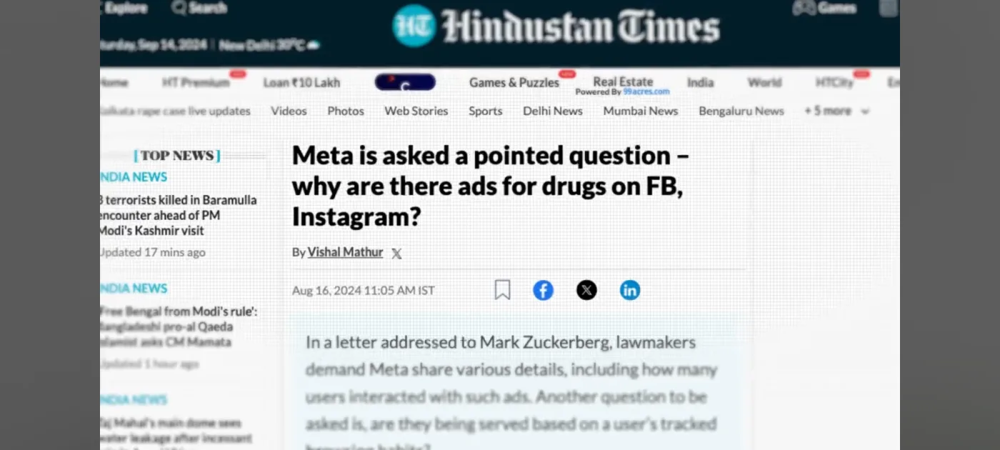
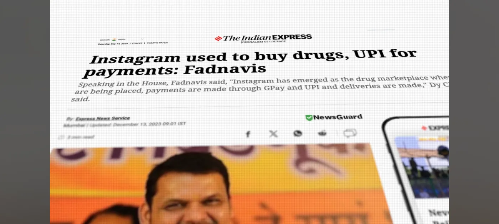
ലഹരി ഉപയോഗത്തിന്റെ ഗ്ലോറിഫിക്കേഷൻ
ഡിജിറ്റൽ യുഗത്തിൽ സോഷ്യൽ മീഡിയ പ്ലാറ്റ്ഫോമുകൾ കുട്ടികളുടെ ചിന്തയും പെരുമാറ്റവും സ്വാധീനിക്കുന്ന പ്രധാന ഘടകങ്ങളായി മാറിയിരിക്കുകയാണ്. പ്രത്യേകിച്ച് ലഹരി ഉപയോഗവുമായി ബന്ധപ്പെട്ട ഉള്ളടക്കങ്ങൾ “സാധാരണ” മാത്രമല്ല, ചിലപ്പോൾ “ആകർഷകമായ ജീവിതശൈലി” എന്ന രീതിയിൽ അവതരിപ്പിക്കപ്പെടുന്ന പ്രവണത ഗൗരവകരമാണ്. WHO, UNICEF, American Academy of Pediatrics (AAP) തുടങ്ങിയ സ്ഥാപനങ്ങളുടെ പഠനങ്ങൾ പ്രകാരം, ഇത്തരം exposure കൗമാരക്കാരിൽ curiosity മുതൽ experimentation വരെയുള്ള ഒരു പ്രവണത സൃഷ്ടിക്കുന്നു.
Algorithm-driven content systems ഉപയോക്താവിന്റെ താൽപര്യങ്ങൾ അനുസരിച്ച് സമാന ഉള്ളടക്കങ്ങൾ തുടർച്ചയായി നൽകുന്നതിനാൽ, ലഹരി സംബന്ധമായ ഉള്ളടക്കങ്ങൾ കണ്ടാൽ അതിനോട് ബന്ധപ്പെട്ട കൂടുതൽ വീഡിയോകളും അക്കൗണ്ടുകളും feed ലേക്ക് എത്തുന്നു. 2023–24 കാലഘട്ടത്തിൽ വന്ന അന്താരാഷ്ട്ര റിപ്പോർട്ടുകൾ പ്രകാരം, ചില സോഷ്യൽ മീഡിയ പ്ലാറ്റ്ഫോമുകൾ ലഹരി വിൽപ്പനക്കും നെറ്റ്വർക്കുകൾക്കും ഉപയോഗിക്കപ്പെടുന്നുണ്ടെന്ന് കണ്ടെത്തിയിട്ടുണ്ട്. ഇതോടെ സോഷ്യൽ മീഡിയ ഒരു passive viewing space എന്നതിൽ നിന്ന് active access point ആയി മാറുന്നു. കൂടാതെ Social Learning Theory അനുസരിച്ച്, കുട്ടികൾ കാണുന്ന പെരുമാറ്റങ്ങൾ അനുകരിക്കാൻ സാധ്യത കൂടുതലാണ്; അതിനാൽ repeated exposure ലഹരി ഉപയോഗത്തെ “acceptable” ആയി തോന്നിക്കുന്ന സാഹചര്യം സൃഷ്ടിക്കുന്നു. കൗമാരപ്രായത്തിലെ brain development (prefrontal cortex) പൂര്ത്തിയാകാത്ത ഘട്ടത്തിൽ dopamine-driven content കൂടുതലായി ലഭിക്കുന്നത് impulsivity വർധിപ്പിക്കുകയും, risk-taking behaviour കൂട്ടുകയും ചെയ്യുന്നു എന്ന് Journal of Adolescent Health, Lancet Child & Adolescent Health എന്നിവയിലെ പഠനങ്ങൾ വ്യക്തമാക്കുന്നു.
പ്രധാന കണ്ടെത്തലുകൾ
- സോഷ്യൽ മീഡിയ exposure കൂടുന്തോറും ലഹരിയോടുള്ള കൗതുകവും അംഗീകരണവും വർധിക്കുന്നു
- Algorithmic feeds വഴി കുട്ടികൾക്ക് തടസ്സമില്ലാത്ത ലഹരി സംബന്ധമായ ഉള്ളടക്കം ലഭിക്കുന്നു
- സോഷ്യൽ മീഡിയ ലഹരി നെറ്റ്വർക്കുകളിലേക്ക് ഒരു പ്രവേശന കവാടമായി പ്രവർത്തിക്കുന്നു
- കൗമാര brain development ഘട്ടത്തിൽ ഇത്തരം exposure → impulsivity & risk-taking വർധിക്കുന്നു
- Repeated exposure → ലഹരി ഉപയോഗം “സാധാരണ” എന്ന ബോധം രൂപപ്പെടുന്നു
ഗുണ്ടാസംഘങ്ങളും ലഹരിയും: തൃശ്ശൂരിലെ ഒരു സംഭവത്തിൽ ഗുണ്ടാ സംഘത്തിന്റെ ആഘോഷങ്ങൾക്കിടയിൽ നിന്നും പ്രായപൂർത്തിയാകാത്ത കുട്ടികൾ ഉൾപ്പെടെയുള്ളവരെ പോലീസ് കസ്റ്റഡിയിൽ എടുത്തിരുന്നു. ഇത്തരം സംഘങ്ങളെയും അവരുടെ ലഹരി ഉപയോഗത്തെയും ഇന്റർനെറ്റിൽ പലരും ഹീറോയിസമായി അവതരിപ്പിക്കുന്നു.
ആയുധങ്ങളും ലഹരിയും: ചില യൂട്യൂബർമാരെ മെത്താഫിറ്റമിൻ (Methamphetamine), തോക്ക് എന്നിവയുമായി ബന്ധപ്പെട്ട കേസിൽ പോലീസ് പിടികൂടിയിരുന്നു. ഇതൊക്കെ കാണുന്ന കൗമാരക്കാർക്ക് ഇത്തരം പെരുമാറ്റങ്ങൾ സ്വാഭാവികമാണെന്ന തോന്നൽ ഉണ്ടാകുന്നു.
വയലൻസ് ഉള്ളടക്കങ്ങളും പെരുമാറ്റ അനുകരണവും
സോഷ്യൽ മീഡിയയും ഓൺലൈൻ വീഡിയോ പ്ലാറ്റ്ഫോമുകളും വഴി കുട്ടികൾക്ക് ലഭിക്കുന്ന അതിക്രമ ദൃശ്യങ്ങൾ (violence content) അവരുടെ പെരുമാറ്റ രൂപീകരണത്തിൽ ഗൗരവമായ സ്വാധീനം ചെലുത്തുന്നതായി നിരവധി പഠനങ്ങൾ വ്യക്തമാക്കുന്നു. സിനിമകൾ, റീൽസ്, ഷോർട്ട് വീഡിയോകൾ എന്നിവയിൽ “fight culture”, “gang identity”, “power display” തുടങ്ങിയവ ആവർത്തിച്ച് അവതരിപ്പിക്കപ്പെടുന്നത്, അതിക്രമത്തെ ഒരു സാധാരണ പ്രതികരണമായി കാണുന്ന പ്രവണത വളർത്തുന്നു.
American Psychological Association (APA) ഉൾപ്പെടെയുള്ള പഠനങ്ങൾ സൂചിപ്പിക്കുന്നത്, repeated exposure to violent media → aggression, desensitization, imitation എന്നിവയ്ക്ക് കാരണമാകുന്നു എന്നതാണ്. കുട്ടികൾക്ക് കാണുന്ന പെരുമാറ്റങ്ങൾ അനുകരിക്കാൻ സാധ്യത കൂടുതലായതിനാൽ, ഇത്തരം ദൃശ്യങ്ങൾ “problem-solving method” ആയി violence നെ normalise ചെയ്യുന്നു. കേരളത്തിൽ സ്കൂൾ തലത്തിൽ പോലും ഗ്രൂപ്പ് തർക്കങ്ങൾ, ഗ്യാങ് അടിസ്ഥാനത്തിലുള്ള സംഘർഷങ്ങൾ, പരസ്പര അക്രമങ്ങൾ വർധിക്കുന്ന പ്രവണതകൾ റിപ്പോർട്ട് ചെയ്യപ്പെടുന്നുണ്ട്; ഇതിന് പിന്നിൽ ഡിജിറ്റൽ പ്ലാറ്റ്ഫോമുകളിൽ കാണുന്ന fight-oriented content ഒരു പ്രധാന സ്വാധീന ഘടകമാണെന്ന് സാമൂഹിക പഠനങ്ങൾ വിലയിരുത്തുന്നു.
ലഹരിയിലേക്കുള്ള വഴികൾ
അൽഗോരിതമിക് ട്രാപ്പ്: സോഷ്യൽ മീഡിയ അൽഗോരിതങ്ങൾ കുട്ടികളുടെ കൗതുകത്തെ ചൂഷണം ചെയ്തുകൊണ്ട് അവർക്ക് അശ്ലീലതയും ലഹരിയെ പ്രോത്സാഹിപ്പിക്കുന്നതുമായ ഉള്ളടക്കങ്ങൾ തുടർച്ചയായി ഫീഡുകളിലേക്ക് എത്തിക്കുന്നു.
അശ്ലീലതയും ലഹരിയും: ഒരു സോഷ്യൽ മീഡിയ ആപ്പ് പ്ലാറ്റ്ഫോമായി മാറിയെന്ന് റിപ്പോർട്ടുകൾ പറയുന്നുണ്ട്. അവിടെ അശ്ലീലമായ ഉള്ളടക്കങ്ങൾക്കൊപ്പം ലഹരി മാഫിയകളുടെ പ്രവർത്തനങ്ങളും നടക്കുന്നു. ഇത്തരം ഇടങ്ങൾ ഒരു ക്ലിക്ക് ദൂരത്തിൽ കുട്ടികൾക്ക് ലഭ്യമാകുന്നു എന്നതാണ് ഏറ്റവും വലിയ ഭീഷണി.
ഇതിന്റെ പ്രത്യാഘാതങ്ങൾ
മാനസിക മാറ്റങ്ങൾ: ഇത്തരം ഉള്ളടക്കങ്ങൾ തുടർച്ചയായി കാണുന്നത് കുട്ടികളുടെ സ്വഭാവത്തിൽ വലിയ മാറ്റങ്ങൾ വരുത്തുന്നു.
സാമൂഹിക വിപത്ത്: ഇന്റർനെറ്റിലെ ഈ അമിത സാന്നിധ്യം കുട്ടികളെ സാമൂഹികമായ ബന്ധങ്ങളിൽ നിന്ന് അകറ്റുകയും, തെറ്റായ സംഘങ്ങളിലേക്ക് എത്തിപ്പെടാൻ കാരണമാകുകയും ചെയ്യുന്നു.
The Behavioral Change; Social Context:
- കുട്ടികളിലെ സ്വഭാവ രൂപീകരണത്തിൽ സോഷ്യൽ മീഡിയയുടെ ദോഷകരമായ സ്വാധീനങ്ങൾ:
ഡിജിറ്റൽ യുഗത്തിൽ സോഷ്യൽ മീഡിയ കുട്ടികളുടെ മനശ്ശാസ്ത്രം, പെരുമാറ്റം, സാമൂഹിക ബന്ധങ്ങൾ എന്നിവയെ ഗൗരവമായി സ്വാധീനിക്കുന്ന പ്രധാന ഘടകമായി മാറിയിരിക്കുന്നു. പ്രത്യേകിച്ച് അല്ഗോരിതം അധിഷ്ഠിത ഉള്ളടക്ക വിതരണം (algorithm-driven content curation), പ്രായപൂർത്തിയാകാത്തവരിൽ വ്യക്തിത്വ വ്യതിയാനങ്ങൾക്കും മാനസിക അസന്തുലിതാവസ്ഥകൾക്കും കാരണമാകുന്നുവെന്ന് നിരവധി ആഗോള പഠനങ്ങൾ സൂചിപ്പിക്കുന്നു.
Algorithmic Bubble & Narcissistic Tendencies
സോഷ്യൽ മീഡിയ പ്ലാറ്റ്ഫോമുകളുടെ അല്ഗോരിതങ്ങൾ ഉപയോക്താവിന്റെ ഇഷ്ടങ്ങൾ മാത്രം അടിസ്ഥാനമാക്കി ഉള്ളടക്കം നൽകുന്നതിനാൽ “Echo Chamber” അല്ലെങ്കിൽ “Bubble Effect” രൂപപ്പെടുന്നു. ഇതിലൂടെ കുട്ടികൾക്ക് വ്യത്യസ്ത അഭിപ്രായങ്ങൾ ഏറ്റെടുക്കാനുള്ള കഴിവ് കുറഞ്ഞ് Self-centric cognition വർധിക്കുന്നു. പഠനങ്ങൾ സൂചിപ്പിക്കുന്നത്, ഈ രീതിയിലുള്ള exposure:
- Empathy കുറയാൻ
- Narcissistic traits (സ്വയം കേന്ദ്രീകൃത ചിന്ത) വർധിക്കാൻ
വിമർശന സഹിഷ്ണുത കുറയാൻ കാരണമാകുന്നു.
ഇതിന്റെ ദീർഘകാല ഫലം: സാമൂഹിക വിരോധം, aggression, ചിലപ്പോൾ deviant അല്ലെങ്കിൽ criminal behavior ലേക്കുള്ള വഴിമാറൽ.
Child-centered Ego Distortion
കുട്ടികളുടെ സ്വാഭാവിക വളർച്ചയിൽ “social feedback” നിർണായകമാണ്.
- എന്നാൽ സോഷ്യൽ മീഡിയയിൽ ലഭിക്കുന്ന curated validation (likes, shares) മൂലം:
- Artificial self-worth രൂപപ്പെടുന്നു
- Real-world rejection കൈകാര്യം ചെയ്യാനുള്ള കഴിവ് കുറഞ്ഞ് പോകുന്നു
ഇത് Impulse control issuesക്കും behavioral instabilityക്കും കാരണമാകുന്നു.
Early Sexualization & Hormonal Impact
Explicit content ലേക്ക് ചെറുപ്പത്തിൽ തന്നെ exposure ലഭിക്കുന്നത് puberty-related behavioral shifts വേഗത്തിലാക്കുന്നു.
- Dopamine overstimulation → addictive viewing patterns
- Early sexual curiosity → premature behavioral experimentation
Risky relationships.
- Consent awareness കുറവ്
Emotional immaturity ഉള്ള ബന്ധങ്ങൾ വർധിക്കുന്നു.
Cognitive & Emotional Dysregulation
- Continuous scrolling culture കുട്ടികളുടെ brain development നെ ബാധിക്കുന്നു:
- Attention span കുറയുന്നു
- Deep thinking ability കുറയുന്നു
- Instant gratification dependency വർധിക്കുന്നു
- Academic decline
- Emotional instability (anxiety, irritability)
Social Isolation vs Hyper-connectivity
- Online interaction വർധിച്ചാലും, real-life ബന്ധങ്ങൾ ദുർബലമാകുന്നു
- Loneliness paradox
- Social anxiety
Real-world communication skills കുറവ് അനുഭവപ്പെടുന്നു.
സോഷ്യൽ മീഡിയ കുട്ടികളുടെ മാനസിക, ശാരീരിക, സാമൂഹിക വളർച്ചയിൽ ഒരേസമയം ശക്തമായ സ്വാധീനവും അപകടസാധ്യതയും സൃഷ്ടിക്കുന്ന ഘടകമാണ്. Algorithm-driven personalization, early exposure to explicit content, and validation-based identity formation എന്നിവ ചേർന്ന് കുട്ടികളിൽ വ്യക്തിത്വ വ്യതിയാനങ്ങളും അപകടകരമായ പെരുമാറ്റ പ്രവണതകളും ഉണ്ടാക്കുന്നുവെന്ന് നിലവിലെ ശാസ്ത്രീയ പഠനങ്ങൾ വ്യക്തമാക്കുന്നു. അതിനാൽ നിയന്ത്രിത ഉപയോഗം, ഡിജിറ്റൽ ലിറ്ററസി, മാതാപിതൃ-വിദ്യാഭ്യാസ ഇടപെടൽ എന്നിവ അനിവാര്യമാണ്.
ഡിജിറ്റൽ പ്ലാറ്റ്ഫോമുകളിലെ കുട്ടികളുടെ ആധിപത്യം:
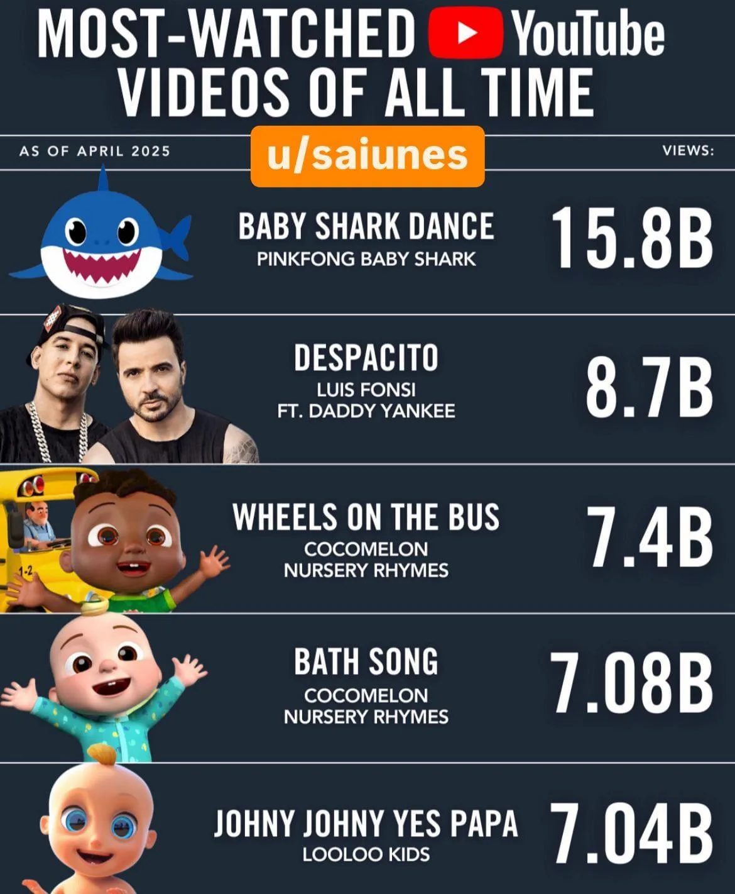
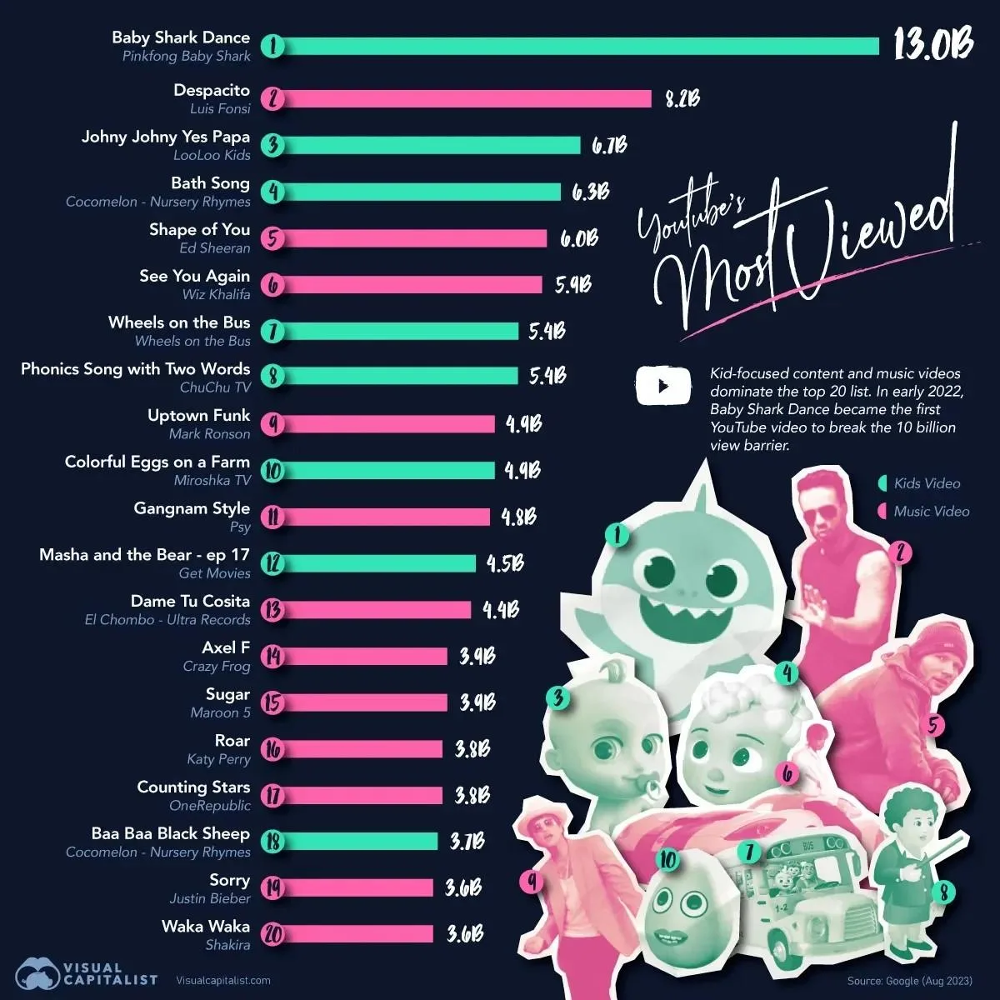
2025 വരെ ലഭ്യമായ കണക്കുകൾ പ്രകാരം, YouTube-യിലെ എക്കാലത്തെയും ഏറ്റവും കൂടുതൽ കാണപ്പെട്ട Top 10 വീഡിയോകളിൽ കുട്ടികളുടെ ഉള്ളടക്കം വ്യക്തമായ ആധിപത്യം പുലർത്തുന്നു. പട്ടികയിലെ 10ൽ 6 വീഡിയോകൾ (ഏകദേശം 60%) Baby Shark, Wheels on the Bus, Bath Song, Johny Johny Yes Papa തുടങ്ങിയ നഴ്സറി റൈംസ് / പ്രാരംഭ പഠന ഗാനങ്ങളാണ്. ഇവ ഓരോന്നും തന്നെ 6 മുതൽ 16 ബില്ല്യൺ വരെ വ്യൂസ് നേടിയിട്ടുണ്ട്. ഏകദേശം 16 ബില്ല്യൺ കാഴ്ചകളോടെ Baby Shark ഒന്നാം സ്ഥാനത്ത് നിൽക്കുമ്പോൾ, ആഗോള ഹിറ്റ് ഗാനമായ Despacito പോലും ഏകദേശം 8 ബില്ല്യൺ കാഴ്ചകളിലാണ് നിലകൊള്ളുന്നത്.
ഈ കണക്കുകൾ ഒരു നിർണായക യാഥാർത്ഥ്യം വ്യക്തമാക്കുന്നു: ഡിജിറ്റൽ പ്ലാറ്റ്ഫോമുകളുടെ ഏറ്റവും വലിയ പ്രേക്ഷകവിഭാഗങ്ങളിൽ ഒന്നാണ് ചെറുകുട്ടികൾ. ആവർത്തിച്ച് കാണുന്ന viewing pattern, ബാല്യത്തിൽ തന്നെ തുടങ്ങുന്ന സ്ക്രീൻ എക്സ്പോഷർ, കൂടാതെ algorithm-driven recommendation systems എന്നിവ ചേർന്നാണ് ഈ ഉയർന്ന engagement രൂപപ്പെടുന്നത്. ഇതോടെ കുട്ടികൾക്ക് അനുയോജ്യമായ ഉള്ളടക്കം മാത്രമല്ല, അതിന് പുറത്തുള്ള മറ്റ് ഉള്ളടക്കങ്ങളിലേക്കും എളുപ്പത്തിൽ നീങ്ങുന്ന ഒരു digital pathway രൂപപ്പെടുന്നുണ്ട്.
- Top 10 വീഡിയോകളിൽ ഏകദേശം 60% കുട്ടികളുടെ ഉള്ളടക്കം
- ഓരോ വീഡിയോക്കും ബില്ല്യൺ കണക്കിന് ആവർത്തിച്ചുള്ള കാഴ്ചകൾ
- Early exposure + repetition → high engagement pattern
- Algorithm വഴി കുട്ടികൾക്ക് തുടർച്ചയായ content flow
- പ്ലാറ്റ്ഫോം ഉപയോഗത്തിന്റെ പ്രധാന driving force കുട്ടികൾ തന്നെ
Why No Censorship!
സിനിമകൾക്കും സീരിയലുകൾക്കും OTT പ്ലാറ്റ്ഫോമുകൾക്കും ഉള്ളടക്കം നിയന്ത്രിക്കുന്ന സെൻസർഷിപ്പ് സംവിധാനങ്ങൾ നിലവിലുണ്ടെങ്കിലും, സോഷ്യൽ മീഡിയയിൽ സമാനമായ നിയന്ത്രണം പ്രായോഗികമായി ഇല്ലെന്നതാണ് പ്രധാന ആശങ്ക. Content reach നേടാനുള്ള മത്സരത്തിൽ, ചില ഇൻഫ്ലുവൻസർമാർ നിയന്ത്രണമില്ലാത്ത ഉള്ളടക്കങ്ങൾ അവതരിപ്പിക്കുമ്പോൾ, അതിന്റെ പ്രധാന പ്രേക്ഷകർ കുട്ടികളായിത്തീർന്നിരിക്കുന്നു. ഇതിലൂടെ പ്രായപരിധി പരിഗണിക്കാത്ത, ഫിൽറ്റർ ചെയ്യാത്ത ഉള്ളടക്കങ്ങൾ കുട്ടികളിലേക്ക് എളുപ്പത്തിൽ എത്തുന്ന സാഹചര്യം രൂപപ്പെടുന്നു.
“Reverse Flynn Effect”
കഴിഞ്ഞ പല ദശാബ്ദങ്ങളായി ലോകമെമ്പാടും IQ സ്കോറുകൾ ഉയരുന്ന പ്രവണതയാണ് (Flynn Effect) രേഖപ്പെടുത്തിയിരുന്നത്. എന്നാൽ സമീപകാല പഠനങ്ങൾ സൂചിപ്പിക്കുന്നത്, ചില രാജ്യങ്ങളിൽ ഈ പ്രവണത നിൽക്കുകയോ ചില സാഹചര്യങ്ങളിൽ തിരിച്ചുപോകുകയോ (Reverse Flynn Effect) ചെയ്യുന്നുവെന്നാണ്. പ്രത്യേകിച്ച് പുതിയ തലമുറകളിൽ cognitive skills — reasoning, attention, problem-solving തുടങ്ങിയവയിൽ മാറ്റങ്ങൾ കാണപ്പെടുന്നുവെന്നതാണ് ഗവേഷണ നിരീക്ഷണം.
ഇതിന് ഒരു ഏകകാരണം ഇല്ലെങ്കിലും, ഡിജിറ്റൽ ജീവിതശൈലി ഒരു പ്രധാന ഘടകമായി പഠനങ്ങൾ ചൂണ്ടിക്കാണിക്കുന്നു. Screen-based engagement, short-form content consumption, continuous digital stimulation എന്നിവ ശ്രദ്ധയുടെ ദൈർഘ്യം കുറയ്ക്കുകയും deep thinking കഴിവുകൾക്ക് വെല്ലുവിളി സൃഷ്ടിക്കുകയും ചെയ്യുന്നു. OECD, PISA assessments എന്നിവയുമായി ബന്ധപ്പെട്ട പഠനങ്ങൾ പ്രകാരം, ചില രാജ്യങ്ങളിൽ വിദ്യാർത്ഥികളുടെ reading comprehension, analytical reasoning എന്നിവയിൽ കുറവ് രേഖപ്പെടുത്തിയിട്ടുണ്ട്.
പ്രധാന കണ്ടെത്തലുകൾ
- IQ growth trend ചില പ്രദേശങ്ങളിൽ stagnation / decline കാണിക്കുന്നു (Reverse Flynn Effect)
- Attention span കുറവ് & sustained focus പ്രശ്നങ്ങൾ വർധിക്കുന്നു
- Short-form digital content → deep thinking കുറയുന്നു
- Reading & analytical skills ൽ decline trends (PISA observations)
- Digital overstimulation → cognitive processing രീതിയിൽ മാറ്റങ്ങൾ
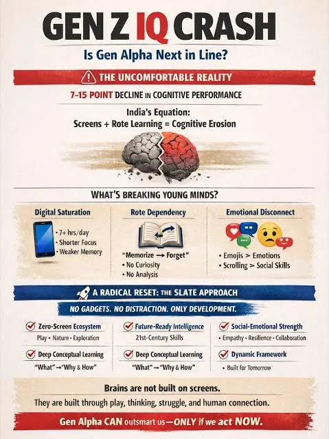
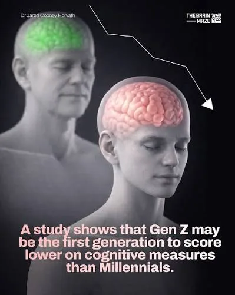
The Cultural Erosion
സോഷ്യൽ മീഡിയയും ഗ്ലോബൽ ഡിജിറ്റൽ പ്ലാറ്റ്ഫോമുകളും ലോകത്തിന്റെ വിവിധ സംസ്കാരങ്ങളെ ഒരേ ഇടത്തിലേക്ക് കൊണ്ടുവന്നിട്ടുണ്ട്. ഈ “cultural flow” സ്വാഭാവികമായ ഒരു പ്രക്രിയയായിരിക്കുമ്പോഴും, നിയന്ത്രണമില്ലാത്ത exposure മൂലം കുട്ടികളിൽ പ്രാദേശിക സംസ്കാരത്തോടുള്ള ബന്ധം കുറയുന്ന പ്രവണതകൾ ശ്രദ്ധേയമാകുന്നു. പ്രത്യേകിച്ച് കൗമാരപ്രായത്തിൽ, പുറംലോക സംസ്കാരങ്ങളിലെ ജീവിതശൈലികളും പ്രവണതകളും അനുകരിക്കുന്ന tendency വർധിക്കുന്നു. ഇത് “identity formation” ഘട്ടത്തിൽ ആശയക്കുഴപ്പങ്ങൾക്കും മൂല്യപരമായ മാറ്റങ്ങൾക്കും കാരണമാകുന്നു എന്ന് സാമൂഹ്യ-മനശാസ്ത്ര പഠനങ്ങൾ സൂചിപ്പിക്കുന്നു.
ഇത് ഒരു സംസ്കാരത്തെ മറ്റൊന്നിനേക്കാൾ മേലെന്ന് വിലയിരുത്തുന്ന വിഷയമല്ല; എന്നാൽ ബാല്യത്തിൽ തന്നെ ലഭിക്കുന്ന അമിതമായ digital exposure മൂലം, കുട്ടികൾക്ക് അവരുടെ സ്വന്തം സാമൂഹിക, കുടുംബ, മതപരമായ മൂല്യ ഘടനകളോട് ഒരു അകലം അനുഭവപ്പെടുന്ന സാഹചര്യം രൂപപ്പെടുന്നു. “Cultural homogenization” എന്ന ആശയം ചൂണ്ടിക്കാണിക്കുന്നതുപോലെ, ലോകമെമ്പാടുമുള്ള സമാന ഉള്ളടക്കങ്ങൾ ആവർത്തിച്ച് കാണുന്നത്, വ്യത്യസ്തമായ പ്രാദേശിക വ്യക്തിത്വങ്ങളെ മങ്ങിയതാക്കുന്ന ഒരു പ്രവണത സൃഷ്ടിക്കുന്നു.
ഒരു Case Study:
🌐 ഡിജിറ്റൽ സ്വാധീനം
📱 ഡിജിറ്റൽ പ്ലാറ്റ്ഫോം സ്വാധീനം
- Culture ഇനി ഭൂമിശാസ്ത്രപരമായ അതിർത്തികളിൽ ഒതുങ്ങുന്നില്ല
- Streaming platforms, social media, fan apps വഴി
- Global cultural spread exponential ആയി വർധിക്കുന്നു
- Algorithm-driven recommendation systems: Culture reach നെ speed + scale ഇരട്ടിയാക്കുന്നു
Digital Education
ഡിജിറ്റൽ എഡ്യൂക്കേഷൻ: നിയന്ത്രിത ഉപയോഗം തന്നെയാണ് പരിഹാരം
വിദ്യാഭ്യാസ ആവശ്യങ്ങൾ ഡിജിറ്റൽ ഉപകരണങ്ങളുടെ ഉപയോഗത്തിന് പ്രധാന കാരണമായി ചൂണ്ടിക്കാണിക്കപ്പെടുന്നുണ്ടെങ്കിലും, അതിന് നിയന്ത്രിതവും ഘടിതവുമായ സമീപനം അനിവാര്യമാണ്. EdTechയും ഡിജിറ്റൽ വിദ്യാഭ്യാസവും വളരുന്ന സാഹചര്യത്തിൽ, കുട്ടികൾക്ക് ഗാഡ്ജറ്റ് ഉപയോഗത്തിന്റെ അടിസ്ഥാന ശീലങ്ങൾ, സുരക്ഷ, ഉത്തരവാദിത്തം എന്നിവ ഉൾപ്പെടുന്ന ഡിജിറ്റൽ ലിറ്ററസി പരിശീലനം പാഠ്യപദ്ധതിയിൽ തന്നെ ഉൾപ്പെടുത്തേണ്ടതാണ്.
പഠന ആവശ്യങ്ങൾക്ക് സോഷ്യൽ മീഡിയ ഉപയോഗം അനിവാര്യമല്ല; അതിന് പ്രത്യേകം രൂപകൽപ്പന ചെയ്ത വിദ്യാഭ്യാസ പ്ലാറ്റ്ഫോമുകൾ നിലവിലുണ്ട്. നിയന്ത്രണമില്ലാത്ത പ്ലാറ്റ്ഫോമുകൾ ഉപയോഗിക്കുന്നത് കുട്ടികളെ അനാവശ്യ ഉള്ളടക്കങ്ങളിലേക്ക് എളുപ്പത്തിൽ നയിക്കാനുള്ള സാധ്യത വർധിപ്പിക്കുന്നു. പ്രത്യേകിച്ച് YouTube അധ്യാപനത്തിൽ ഉപയോഗിക്കുമ്പോൾ, കുട്ടികൾക്ക് അനുയോജ്യമായ YouTube Kids പോലുള്ള നിയന്ത്രിത സംവിധാനങ്ങൾ മാത്രം ഉപയോഗിക്കപ്പെടുകയും, മറ്റു ഉള്ളടക്കങ്ങളിലേക്ക് പ്രവേശനം തടയപ്പെടുകയും ചെയ്യേണ്ടത് നിർണായകമാണ്.
ഡിജിറ്റൽ വിദ്യാഭ്യാസം ആവശ്യമാണ്; എന്നാൽ നിയന്ത്രിത സംവിധാനങ്ങളും കൃത്യമായ പരിശീലനവും ഇല്ലെങ്കിൽ അത് തന്നെ ഒരു അപകടമായി മാറും.
നിയന്ത്രണവും നിയമവും
സോഷ്യൽ മീഡിയയും ഡിജിറ്റൽ പ്ലാറ്റ്ഫോമുകളും നിയന്ത്രിക്കാൻ സാധ്യമല്ലെന്നൊരു പൊതുധാരണ സമൂഹത്തിൽ നിലനിൽക്കുന്നുണ്ട്. എന്നാൽ ഇത് യാഥാർത്ഥ്യത്തോട് പൊരുത്തപ്പെടുന്നതല്ല. 2020-ൽ രാജ്യസുരക്ഷയും ഡാറ്റാ സ്വകാര്യതയും ചൂണ്ടിക്കാട്ടി ഇന്ത്യ സർക്കാർ TikTok ഉൾപ്പെടെയുള്ള നിരവധി ആപ്പുകൾ നിരോധിച്ചത്, ആവശ്യമായപ്പോൾ കൃത്യമായ നിയമനിർമാണവും ഭരണ ഇടപെടലും വഴി ഡിജിറ്റൽ പ്ലാറ്റ്ഫോമുകളെ നിയന്ത്രിക്കാൻ കഴിയുമെന്ന് തെളിയിച്ച സംഭവമാണ്. അതിനാൽ കുട്ടികളുടെ സുരക്ഷയെ മുൻനിർത്തി സോഷ്യൽ മീഡിയ ഉപയോഗത്തിൽ നിയന്ത്രണങ്ങൾ കൊണ്ടുവരുന്നത് പ്രായോഗികവും അനിവാര്യവുമായ ഒരു നയപരമായ തീരുമാനമാണ്.
ഇതിനൊപ്പം, ഡിജിറ്റൽ സാങ്കേതികവിദ്യകളുടെ അതിവേഗ വളർച്ച — പ്രത്യേകിച്ച് Artificial Intelligence, Deepfake തുടങ്ങിയവ — പുതിയതരം നിയമപരമായ വെല്ലുവിളികൾ സൃഷ്ടിക്കുന്നുണ്ട്. നിലവിൽ ഇന്ത്യയിൽ AI-യുമായി ബന്ധപ്പെട്ട വ്യക്തമായ, സമഗ്രമായ നിയമ ചട്ടക്കൂട് നിലവിലില്ല. ഇതേസമയം European Union, China, Canada, Brazil തുടങ്ങിയ രാജ്യങ്ങൾ AI ഉപയോഗത്തിനും ഡാറ്റാ സുരക്ഷയ്ക്കുമായി വ്യക്തമായ നിയമങ്ങളും മാർഗ്ഗനിർദ്ദേശങ്ങളും രൂപീകരിച്ചു കൊണ്ടിരിക്കുകയാണ്.
- ഇന്ത്യയിൽ നിലവിൽ ഈ മേഖലയിൽ ആശ്രയിക്കപ്പെടുന്ന പ്രധാന നിയമ ചട്ടക്കൂടുകൾ:
- Information Technology Act 2000
- Digital Personal Data Protection Bill 2022
ഇവയിലെ IT Act (Sec. 43A, 72A)യും ഡാറ്റാ പ്രൊട്ടക്ഷൻ നിയമ നിർദ്ദേശങ്ങളും പ്രധാനമായും സ്വകാര്യ ഡാറ്റയുടെ സംരക്ഷണം ലക്ഷ്യമാക്കുന്നതാണ്. എന്നാൽ algorithmic influence, കുട്ടികളുടെ content exposure, AI misuse തുടങ്ങിയ വിഷയങ്ങൾ നേരിട്ട് കൈകാര്യം ചെയ്യുന്ന സമഗ്ര നിയമ സംവിധാനങ്ങൾ ഇപ്പോഴും അപൂർണ്ണമാണ്. അതേസമയം NITI Aayog പുറത്തിറക്കിയ National Strategy for Artificial Intelligence 2018, “Responsible AI for All” പോലുള്ള മാർഗ്ഗരേഖകൾ നയപരമായ ദിശ നിർദ്ദേശിക്കുന്നുവെങ്കിലും, ഇവ നിർബന്ധിത നിയമ സംവിധാനങ്ങളല്ല.
പ്രധാന ആശങ്കകൾ (Policy Gaps)
- AI, Deep fake എന്നിവയെ നേരിട്ട് നിയന്ത്രിക്കുന്ന സ്പഷ്ടമായ നിയമങ്ങൾ ഇല്ലാത്തത്
- സോഷ്യൽ മീഡിയ algorithms വഴി നടക്കുന്ന content manipulation ന് നിയമപരമായ നിയന്ത്രണ കുറവ്
- കുട്ടികൾക്ക് ലഭിക്കുന്ന ഉള്ളടക്കത്തിൽ age-based regulation അപര്യാപ്തം
- Platform accountability സംബന്ധിച്ച വ്യക്തമായ ഉത്തരവാദിത്വ നിർണ്ണയം ഇല്ലാത്തത്
- ഡിജിറ്റൽ പ്ലാറ്റ്ഫോമുകൾ ഉപയോഗിക്കുന്നവരുടെ privacy awareness വളരെ കുറവ്
ഡിജിറ്റൽ ലോകത്തിലെ വെല്ലുവിളികൾ സാങ്കേതികതയിലൊതുങ്ങുന്നതല്ല; അത് നയപരവും നിയമപരവുമായ ഇടപെടലുകൾ ആവശ്യപ്പെടുന്ന ഒരു സാമൂഹിക വിഷയമാണ്. ഇന്ത്യയ്ക്ക് ഇതിനകം തന്നെ ഡിജിറ്റൽ പ്ലാറ്റ്ഫോമുകൾ നിയന്ത്രിക്കാൻ കഴിവുണ്ടെന്ന് തെളിഞ്ഞിട്ടുണ്ട്. ഇപ്പോൾ ആവശ്യമായത്, കുട്ടികളുടെ സുരക്ഷയും ഭാവിയും മുൻനിർത്തിയുള്ള സ്പഷ്ടവും ശക്തവുമായ നിയമ ചട്ടക്കൂടുകളും ഉത്തരവാദിത്തമുള്ള നിയന്ത്രണ സംവിധാനങ്ങളും ആണ്.
സംസ്ഥാനതലത്തിൽ സ്വീകരിക്കാവുന്ന ഇടപെടലുകൾ
കേന്ദ്രനിയമങ്ങൾ നിർണ്ണായകമായിരുന്നാലും, കുട്ടികളുടെ ഡിജിറ്റൽ സുരക്ഷ ഉറപ്പാക്കുന്നതിൽ സംസ്ഥാനങ്ങൾക്ക് നിർണായക പങ്കുണ്ട്. വിദ്യാഭ്യാസം, പൊതു ബോധവത്കരണം, നടപ്പാക്കൽ സംവിധാനങ്ങൾ എന്നിവ വഴി സംസ്ഥാനതലത്തിൽ പ്രായോഗികമായ നിയന്ത്രണങ്ങൾ കൊണ്ടുവരാൻ കഴിയും.
പ്രധാന നടപടികൾ
സ്കൂൾ തല നിയന്ത്രണം: സ്കൂളുകളിൽ മൊബൈൽ ഫോൺ ഉപയോഗത്തിന് കർശന മാർഗ്ഗനിർദ്ദേശങ്ങളും Digital Discipline Policyയും നടപ്പാക്കുക
ഡിജിറ്റൽ ലിറ്ററസി വിദ്യാഭ്യാസം: കുട്ടികൾക്കും മാതാപിതാക്കൾക്കും അധ്യാപകർക്കുമായി digital safety, privacy, responsible usage എന്നിവ ഉൾപ്പെടുത്തിയ പരിശീലനം നിർബന്ധമാക്കുക
ബോധവത്കരണ ക്യാമ്പെയിനുകൾ: ലഹരി, വയലൻസ്, സോഷ്യൽ മീഡിയ അപകടങ്ങൾ എന്നിവയെക്കുറിച്ച് സംസ്ഥാനതലത്തിൽ സ്ഥിരമായ awareness programs നടത്തുക
നിയമ നടപ്പാക്കൽ ശക്തിപ്പെടുത്തൽ: സൈബർ ക്രൈം സെല്ലുകൾ വഴി ഓൺലൈൻ ലഹരി നെറ്റ്വർക്കുകളും ഹാനികരമായ ഉള്ളടക്കങ്ങളും നിരീക്ഷിക്കുകയും നടപടി സ്വീകരിക്കുകയും ചെയ്യുക
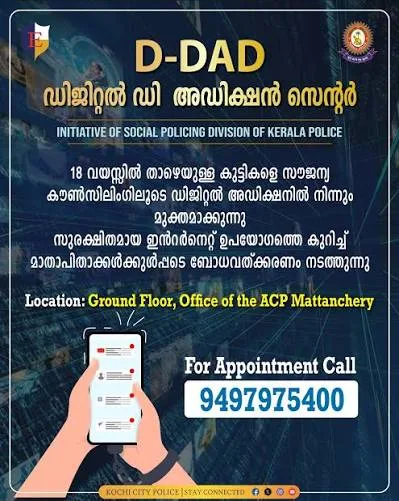
- We don't want our kids childhood stolen by this platforms